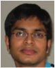

01 Sep 2012
Vivek Sabbineni joins the EPiCS team at EADS
 Vivek Sabbieni has joined the EPiCS team at EADS. Vivek received his Master of Computer Science (2006) from Andhra University in India and then completed his Masters in System-on-Chip design (2009) at Lund University, Sweden. During his Master thesis studies he worked novel concepts for the architecture exploration of the ADRES processor from Inter University Micro Electronics Center (IMEC), Belgium. After completing his master studies, he worked as a junior researcher (2010-2012) at the Barcelona Supercomputing center, Spain, on Worst Case Execution Time (WCET) analysis for hard real time systems. His current research topics are reconfigurable computing systems, architectures for real time systems and fault tolerance for avionic systems.
Within the EPiCS project Vivek will be responsible for investigating thread-level fault tolerance concepts for FPGA-based heterogeneous multi-core platforms comprising programmable and customised cores.
Welcome to the team!